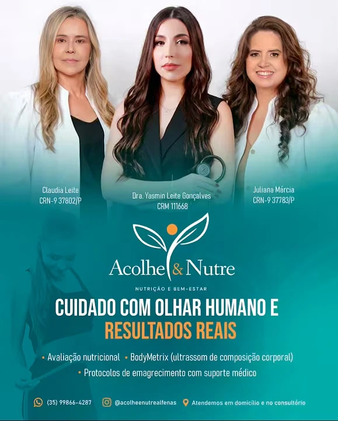
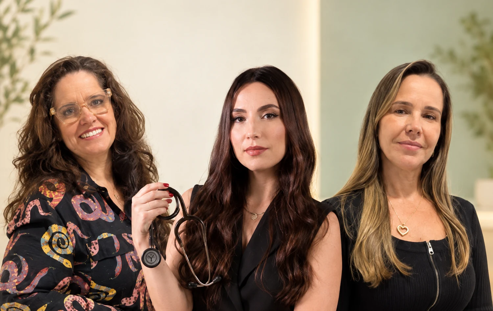

Escuta
Ouvimos você para compreender sua história, seus objetivos e sua rotina.
Nutrição com acolhimento · Alfenas, MG
Unimos atenção médica e nutricional em um acompanhamento que respeita sua história, suas metas e sua rotina ao longo do caminho.

Atendimento próximoPresencial em Alfenas
Acompanhamento integradoEquipe médica e nutricional
Contato diretoConverse pelo WhatsApp
Acolhe & Nutre
Nosso atendimento reúne avaliação clínica e nutricional, atenção à composição corporal e orientação para hábitos saudáveis. Conhecemos sua realidade para conversar sobre os próximos passos com acompanhamento profissional.
Quando indicado e disponível, podemos utilizar o ultrassom BodyMetrix na avaliação corporal. Converse conosco para confirmar se esse recurso faz sentido para o seu atendimento.
Ouvimos você para compreender sua história, seus objetivos e sua rotina.
Realizamos avaliação clínica e nutricional; a avaliação corporal pode incluir o ultrassom BodyMetrix.
Acompanhamos sua evolução e apoiamos a construção de hábitos saudáveis ao longo do processo.
Cuidado pensado para você
Acompanhamos seus objetivos com orientação profissional, atenção à sua realidade e conversas ao longo do processo.
Unimos acompanhamento médico e nutricional para conversar sobre seus objetivos, sua rotina e os próximos passos a partir de uma avaliação individual.
Saiba como funcionaOferecemos suporte nutricional durante protocolos de emagrecimento que incluem canetas, sempre conforme indicação e acompanhamento médico.
Tire suas dúvidasQuando indicado e disponível, podemos utilizar o ultrassom BodyMetrix na avaliação corporal. Consulte-nos para saber se esse recurso é adequado para você.
Pergunte à equipeOferecemos atendimento nutricional para pessoas idosas, inclusive domiciliar. Consulte-nos sobre a região atendida e a disponibilidade.
Converse com a equipeDefinimos cada conduta após avaliação individual, com profissionais habilitados. Este conteúdo é informativo e não substitui uma consulta.
Conheça a equipe
Reunimos duas nutricionistas e uma médica em nossa equipe de atendimento.

Um processo acompanhado
Começamos conhecendo sua saúde, seus objetivos e sua rotina. Seguimos sua evolução e ajustamos as orientações ao longo do caminho.
Uma conversa inicial para compreender necessidades, histórico e expectativas.
Quando indicado e disponível, utilizamos o ultrassom BodyMetrix para avaliar a composição corporal.
Definimos orientações com base na sua avaliação e nas metas conversadas com a equipe.
Acompanhamos sua evolução e combinamos os próximos passos com você.
Informações práticas
Confira respostas para dúvidas comuns. Se precisar de mais detalhes, converse conosco pelo WhatsApp.
Converse pelo WhatsAppFale conosco pelo WhatsApp (35) 99866-4287 para consultar horários e disponibilidade.
Estamos na Rua Duque de Caxias, 1570, ao lado da Santa Casa, em Alfenas, Minas Gerais.
Nosso horário informado é 09h–18h. Fale conosco para confirmar os dias de atendimento e a agenda.
Sim. Oferecemos atendimento nutricional para pessoas idosas, inclusive domiciliar. Consulte-nos sobre a região atendida e a agenda.
Quando indicado e disponível, podemos utilizar o ultrassom BodyMetrix na avaliação corporal. Converse conosco para confirmar para o seu atendimento.
Oferecemos suporte nutricional em protocolos que incluem canetas, sempre com acompanhamento médico. A indicação, a prescrição e o uso de medicamentos devem ser discutidos com um médico.
Fale diretamente com nossa equipe pelo WhatsApp para consultar valores e condições atualizadas.
Estamos em Alfenas
Rua Duque de Caxias, 1570
Ao lado da Santa Casa
Alfenas — MG
O primeiro passo é uma conversa
Converse conosco para conhecer nossos atendimentos e consultar a agenda.
Chamar no WhatsApp